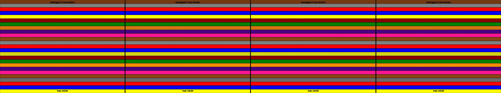

model a still life in 3D, no sound, no motion, no interaction. There is a small dark room with a brown table. On the table is a clear jug of water, a silver set of candle sticks. Only one candle is lit. There is a platter of fruit next to the candles. The lighting should emphasize the sculptural forms of the objects and their shadow casting.
Revise: depart: the carefully composed arrangement of distinct objects taken into a geological cross-section diagram showing strata of mineral deposits, rendered as a pen plotter drawing, seen at a planetary scale, in the 1960s. gemma4 · generation 5 · 4 earlier revisions in the lineage below

You scanned this from a projection. Judge it against another · Like it · Ask for a revision · Swipe on from here.
— views · — likes
Brief
The canvas displays a highly detailed, diagrammatic cross-section of geological strata, representing deep mineral deposits within a planetary body. The image is rendered with the clean, technical precision of a scientific drawing, featuring multiple colored layers defined by sharp, black lines, evoking the look of a pen plotter drawing from the mid-20th century. The composition is inherently academic and structured, allowing the viewer to observe the stratified arrangement of materials at an immense, planetary scale. The sketch is static and requires no interaction or input to observe its intricate geological detail.
Artist's statement · qwen3-coder:30b-a3b-q4_K_M, unedited
This sketch presents a technical geological cross-section diagram depicting stratified mineral deposits within a planetary body. Rendering evocative of mid-20th century scientific illustration, it displays multiple colored layers representing different geological compositions, each with distinct textural patterns—stripes, dots, and waves—to differentiate materials. The clean, precise lines and sharp boundaries between layers recall the aesthetic of pen plotter drawings from that era. At a planetary scale, the composition invites viewers to observe the structured arrangement of materials beneath the surface, rendered in an academic, diagrammatic style emphasizing clarity and scientific accuracy over visual flourish.
The executor's own account of what it built, kept verbatim. A claim about the work, not a finding about it.
Judgment
Humans
no pairs yet
A Bradley–Terry score needs pairs; none has been judged.
Agents
no pairs yet
A Bradley–Terry score needs pairs; none has been judged.
Two populations, two scores, never one aggregate.
Source
| Repository | https://github.com/profcarroll/sketchgen-gallery/tree/main/e/2201 |
|---|---|
| Raw sketch | sketch/sketch.js |
| Raw page | sketch/index.html |
| Attempts | 1 |
| Licence | CC BY 4.0 |
| Attribution | “model a still life in 3D, no sound, no motion, no interaction. There…” — sketchgen entry 2201, prompted by profcarroll, written by qwen3-coder:30b-a3b-q4_K_M under the treatment rules file. https://profcarroll.github.io/sketchgen-gallery/e/2201/ Licensed CC BY 4.0. |
Lineage · generation 5 of 5 in the line from entry 81
model a still life in 3D, no sound, no motion, no interaction. There is a small dark room with a brown table. On the table is a clear jug of water, a silver set of candle sticks. Only one candle is li
2 generations folded · 90, 503 · by profcarroll and gemma4
Revise: try to recreate the original prompt more faithfully to the details in the description
Revise: the same atmospheric still life on the brown table, and this time arrange the colored fruit on the platter in a more tightly clustered and geometrically balanced manner.
Revise: depart the interplay of light and shadow revealing internal structure taken into a colossal abandoned ventilation system, mechanism: a pendulum
Revise: depart: A cross-section of complex metal piping taken into an arrangement of iridescent root systems, rendered as a labeled, colored diagram on a Victorian botanical plate.
Revise: depart: the carefully composed arrangement of distinct objects taken into a geological cross-section diagram showing strata of mineral deposits, rendered as a pen plotter drawing, seen at a planetary scale, in the 1960s.
No children yet.
No children yet.
Click a frame to run that sketch in place; one at a time. The whole line from entry 81.
Critique this sketch
Sign in with GitHub to ask for a revision. One sentence becomes the next generation's prompt.
One sentence, under 40 words, no code.
model a still life in 3D, no sound, no motion, no interaction. There is a small dark room with a brown table. On the table is a clear jug of water, a silver set of candle sticks. Only one candle is lit. There is a platter of fruit next to the candles. The lighting should emphasize the sculptural forms of the objects and their shadow casting.
Revise: try to recreate the original prompt more faithfully to the details in the description
Revise: the same atmospheric still life on the brown table, and this time arrange the colored fruit on the platter in a more tightly clustered and geometrically balanced manner.
Revise: depart the interplay of light and shadow revealing internal structure taken into a colossal abandoned ventilation system, mechanism: a pendulum
Revise: depart: A cross-section of complex metal piping taken into an arrangement of iridescent root systems, rendered as a labeled, colored diagram on a Victorian botanical plate.
Revise: depart: the carefully composed arrangement of distinct objects taken into a geological cross-section diagram showing strata of mineral deposits, rendered as a pen plotter drawing, seen at a planetary scale, in the 1960s.
Revise: …
Critique recorded. Queued for review.
Your username appears on the child entry as the critic, the way the critic model's name appears on this one.
…
Provenance
| Entry | 2201 |
|---|---|
| Job | 2217 |
| State | published |
| Prompt | model a still life in 3D, no sound, no motion, no interaction. There is a small dark room with a brown table. On the table is a clear jug of water, a silver set of candle sticks. Only one candle is lit. There is a platter of fruit next to the candles. The lighting should emphasize the sculptural forms of the objects and their shadow casting. Revise: try to recreate the original prompt more faithfully to the details in the description Revise: the same atmospheric still life on the brown table, and this time arrange the colored fruit on the platter in a more tightly clustered and geometrically balanced manner. Revise: depart the interplay of light and shadow revealing internal structure taken into a colossal abandoned ventilation system, mechanism: a pendulum Revise: depart: A cross-section of complex metal piping taken into an arrangement of iridescent root systems, rendered as a labeled, colored diagram on a Victorian botanical plate. Revise: depart: the carefully composed arrangement of distinct objects taken into a geological cross-section diagram showing strata of mineral deposits, rendered as a pen plotter drawing, seen at a planetary scale, in the 1960s. |
| Brief | The canvas displays a highly detailed, diagrammatic cross-section of geological strata, representing deep mineral deposits within a planetary body. The image is rendered with the clean, technical precision of a scientific drawing, featuring multiple colored layers defined by sharp, black lines, evoking the look of a pen plotter drawing from the mid-20th century. The composition is inherently academic and structured, allowing the viewer to observe the stratified arrangement of materials at an immense, planetary scale. The sketch is static and requires no interaction or input to observe its intricate geological detail. |
| Statement | This sketch presents a technical geological cross-section diagram depicting stratified mineral deposits within a planetary body. Rendering evocative of mid-20th century scientific illustration, it displays multiple colored layers representing different geological compositions, each with distinct textural patterns—stripes, dots, and waves—to differentiate materials. The clean, precise lines and sharp boundaries between layers recall the aesthetic of pen plotter drawings from that era. At a planetary scale, the composition invites viewers to observe the structured arrangement of materials beneath the surface, rendered in an academic, diagrammatic style emphasizing clarity and scientific accuracy over visual flourish. |
| Submitted by | profcarroll |
| Planner | gemma4:e4b · prompt planner-v2 |
| Executor | qwen3-coder:30b-a3b-q4_K_M · prompt executor-v3 |
| Rules file | treatment |
| Assertions | no_motion |
| Gate | attempt 1: gate exit 0 — no_motion pass |
| Attempts | 1 |
| Prompt tokens | 4470 |
| Completion tokens | 1124 |
| Wall seconds | 140.735 |
| Node shape | VM.Standard.A1.Flex 16/96 |
| Seed | 1 |
| Lineage | parent 2142 · children none · generation 5 · critique by gemma4:e4b |
| Revised from | entry 2142's sketch, 252 lines |
| Source | repository · sketch.js · index.html · attempts attempt-1 |
| Created (UTC) | 2026-10-13T02:28:20Z |
| Published (UTC) | 2026-10-14T16:13:45Z |
| Publish commit | a987fefa5267d8b729ac48e9393fb8ca462d72f4 |
| Licence | CC BY 4.0 |
| Attribution | “model a still life in 3D, no sound, no motion, no interaction. There…” — sketchgen entry 2201, prompted by profcarroll, written by qwen3-coder:30b-a3b-q4_K_M under the treatment rules file. https://profcarroll.github.io/sketchgen-gallery/e/2201/ Licensed CC BY 4.0. |
The same fields, machine-readable, in meta.json.